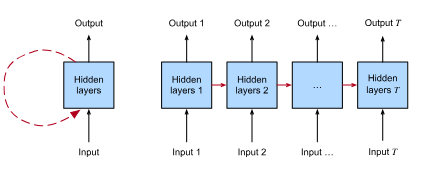
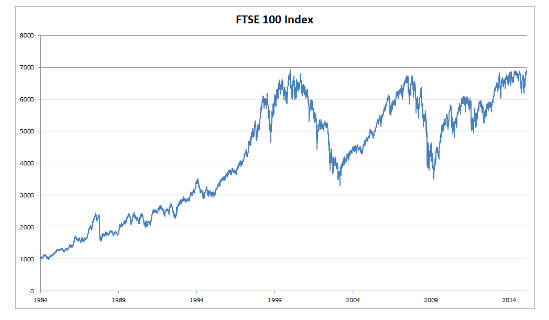

Chapter 9 - RNNs
Table of Contents
1. RNNs
1.1. Sequential Data
- Sequential data, which is data where the order matters (like words in a sentence, frames in a video, or events in a medical history). The key point is that while many ML problems use fixed-length inputs, many real-world problems involve variable-length sequences.
- The sequence matters here than tabular data.
- Example: In a dataset, A house having two bedrooms and one kitchen is same as A house having one kitchen and two bedrooms. The sequence does not matter here. The number of bedrooms and kitchen matters. But, In sequential data, the order matters.
1.2. Why can’t we just use fixed length models for sequential data?
- Variable length of input. A sentence can have 5 or 10 words. A video can have 50 or 200 frames.
- Order of the data matters.
1.3. Why RNNs?
- RNNs are designed specifically for sequential data.
- They have a “memory” of sorts. They process the sequence element by element, and their internal state is updated at each step based on the current element and the previous state. This allows them to capture the dependencies and relationships between elements in the sequence.
- Recurrent Connections: In an RNN, some of the outputs of a layer are fed back into the same layer as inputs in the next time step. This creates a cycle. This “feedback loop” is what allows the network to maintain a state and “remember” information from previous parts of the sequence.

- While the inputs and targets for many fundamental tasks in machine learning cannot easily be represented as fixed-length vectors, they can often nevertheless be represented as varying-length sequences of fixed-length vectors. For example, documents can be represented as sequences of words; medical records can often be represented as sequences of events (encounters, medications, procedures, lab tests, diagnoses); videos can be represented as varying-length sequences of still images.
2. Working with sequences
- In fixed data, we had one single input vector, x ∈ Rd.
- We now focus on inputs that consist of an ordered list of feature vectors x1, . . . , x𝑇 , where each feature vector x𝑡 is indexed by a time step 𝑡 ∈ Z+ lying in R𝑑.
- We can break one long sequence to make it smaller subsequences.
- Unlike tabular data where rows are independent, elements within a sequence are usually not independent.
2.1. Types of Sequence Tasks
2.1.1. Sequence Input, Fixed Output
- Sentiment classification of a movie review. The input is a sequence of words, and the output is a single sentiment score (e.g., positive, negative).
2.1.2. Fixed Input, Sequence Output
- Image captioning. The input is a single image, and the output is a sequence of words describing the image.
2.1.3. Sequence Input, Sequence Output
- This is the most general case.
- Aligned: There is a direct correspondence between the input and output at each time step. Example: Part-of-speech tagging. Each word in the input sentence is tagged with its part of speech (noun, verb, adjective, etc.).
- Unaligned: The input and output sequences don’t have a one-to-one correspondence. Example: Machine translation. The order of words in the input and output sentences might be different. One word in the input might correspond to multiple words in the output, or vice-versa.
2.2. Unsupervised Density Modeling
- The most straightforward problem in Sequence modeling.
- Given a set of sequences, learn the probability distribution of those sequences. In other words, learn how likely you are to see any particular sequence.
3. Autoregressive Models
Let’s suppose a trader wants to build a model on FTSE 100 index. He wants to predict the future price of the index given it’s past history.

- The only information available to predict the next price is the sequence of past prices.
- p(xt | xt-1,…,x1) - This is the conditional probability of the price xt at time t, given the prices at all previous times. In other words, it’s the probability distribution of what the price could be at time t, knowing what happened before.
- We have to estimate this probability distribution, or atleast, expected value (mean) and variance of the distribution.
- A model that predicts a value based on its own past values is called an autoregressive model.
- Example:
- Let’s say we want to predict the stock price on day 5, using an autoregressive model.
- x1 = Stock price on day 1
- x2 = Stock price on day 2
- x3 = Stock price on day 3
- x4 = Stock price on day 4
- x5 = Stock price on day 5 (what we want to predict)
- A simple autoregressive model might be:
- x5 = b + w1x1 + w2x2 + w3x3 + w4x4
- Let’s say we want to predict the stock price on day 5, using an autoregressive model.
- The problem with Basic Autoregressive Models
- The biggest problem is the variable number of inputs. We don’t have any fixed time interval in stock price prediction.
- Strategies for overcoming the challenges of variable number of inputs
- There are two main strategies to deal with the variable number of inputs
- Fixed-Length Window:
- Instead of using all past values, only use the last τ (tau) values. τ is called the “window size” or the “lag”.
- The number of inputs is always the same (equal to τ), at least for t > τ.
- The limitation is we forget all past values and only remember recent values.
- Latent Autoregressive Models:
- Maintain a summary that represents the past.
- Use the past observations xt-1, …, x1 to create or update the hidden state ht-1.
- Use ht-1 to predict the next value xt.
- Fixed-Length Window:
- There are two main strategies to deal with the variable number of inputs
4. Sequence Models
- Our goal is to estimate the joint probability of an entire sequence. This means figuring out how likely it is to see a specific sequence of elements together.
- Generally, these estimated functions are called sequence models and for natural language data, they are called language models.
- Language models can be reduced to autoregressive functions by decomposing the joint density of a sequence 𝑝(𝑥1, . . . , 𝑥𝑇 ) into the product of conditional densities.
- p(x1, x2, …, xT) = p(x1) * p(x2 | x1) * p(x3 | x1, x2) * … * p(xT | x1, x2, …, xT-1)
4.1. Markov Models
- Autoregressive models condition on the entire past. This can be computationally expensive and statistically challenging.
- Markov Models assumes that the future is conditionally independent of the past, given the recent history. In other words, to predict the next element in the sequence, you only need to know the last τ elements. Everything before that is irrelevant.
- τ (tau): The order of the Markov model. It determines how many previous time steps you need to consider.
- k-th Order Markov Model: A Markov model that conditions on the k previous time steps.
- First-Order Markov Model (τ = 1): The simplest case. The next element only depends on the immediately preceding element.
4.2. The Order of Decoding
- Why do we factorize text in left-to-right fashion?
- First, It is more natural. It is how we read and right most languages. We have better intuitions about what words are likely to come next.
- We can easily extend a sequence by multiplying by the conditional probability of the next token: P(xt+1 | xt, …, x1).
- We’re generally better at predicting adjacent words than words at arbitrary locations.
5. Converting Raw Text into Sequence Data
- Typical preprocessing pipelines execute the following steps:
- Load text as strings into memory
- Split the text into tokens (ex: words or characters)
- Build a vocabulary to associate each vocabulary element with a numerical index.
- Convert the text into sequences of numerical indices.
6. Language Models
- The fundamental goal of a language model is to predict the probability of a sequence of words (or characters).
- Given some text, the model already has seen, what’s the likelihood that the next word will be a specific word?
- The goal of the language models is to estimate the joint probability of the whole sequence:
- P(x1, x2,…,XT)
- Let’s say T is 5, and the sequence is “the cat sat on mat”. The equation is figuring out the likelihood of that exact sequence appearing in that specific order. A good language model assigns a higher probability to plausible sequences and a lower probability to nonsensical ones.
6.1. Why are language models useful?
- Text Generation.
- Speech Recognition.
- Document Summarization.
6.2. Learning Language Models
- Core Idea: The core idea of language models is to predict the next word in a sequence, given the words that came before.
- The obvious question is how to model a document, or a sequence of tokens?
- We use the chain rule of probability applied to a sequence of words:
- P(x1, x2, …, xT) = P(x1) * P(x2 | x1) * … * P(xT | x1, …, xT-1)
- We use the chain rule of probability applied to a sequence of words:
- Example:
- Let’s take an example: “deep learning is fun”,
- P(deep, learning, is, fun) = P(deep) * P(learning | deep) * P(is | deep, learning) * P(fun | deep, learning, is)
- This means:
- The probability of the whole sequence “deep learning is fun” is equal to…
- The probability of “deep” starting the sentence multiplied by…
- The probability of “learning” following “deep” multiplied by…
- The probability of “is” following “deep learning” multiplied by…
- The probability of “fun” following “deep learning is”.
- The probability of the whole sequence “deep learning is fun” is equal to…
- This means:
- P(deep, learning, is, fun) = P(deep) * P(learning | deep) * P(is | deep, learning) * P(fun | deep, learning, is)
- Let’s take an example: “deep learning is fun”,
- This is how we would calculate the probability of any sentence. However, calculating the later terms in a long sequence would require knowing the probabilities of every possible sequence of words that could precede a given word. This is computationally impossible! That’s where Markov models come in.
6.2.1. Markov Models and n-grams
- Markov models simplify the problem by making a key assumption: the probability of the next word depends only on a limited number of previous words.
- Markov Property: A sequence has the Markov property (of order 1) if the probability of the next word depends only on the current word. Higher orders mean it depends on more previous words.
- n-grams: n-grams are models that use this Markov assumption. “n” represents the number of words considered in the context.
- Unigram (n=1): The probability of a word is independent of all other words. (P(x1, x2, x3, x4) = P(x1) * P(x2) * P(x3) * P(x4))
- Example: The probability of “The cat sat on the mat” is just:
- P(The) * P(cat) * P(sat) * P(on) * P(the) * P(mat). It doesn’t consider the relationships between the words.
- Example: The probability of “The cat sat on the mat” is just:
- Bigram (n=2): The probability of a word depends only on the previous word. (P(x1, x2, x3, x4) = P(x1) * P(x2 | x1) * P(x3 | x2) * P(x4 | x3))
- Example: The probability of “The cat sat on the mat” is:
- P(The) * P(cat | The) * P(sat | cat) * P(on | sat) * P(the | on) * P(mat | the). It considers pairs of words.
- Example: The probability of “The cat sat on the mat” is:
- Trigram (n=3): The probability of a word depends only on the previous two words. (P(x1, x2, x3, x4) = P(x1) * P(x2 | x1) * P(x3 | x1, x2) * P(x4 | x2, x3))
- Example: The probability of “The cat sat on the mat” is:
- P(The) * P(cat | The) * P(sat | The, cat) * P(on | cat, sat) * P(the | sat, on) * P(mat | on, the). It considers triplets of words.
- Example: The probability of “The cat sat on the mat” is:
- Unigram (n=1): The probability of a word is independent of all other words. (P(x1, x2, x3, x4) = P(x1) * P(x2) * P(x3) * P(x4))
6.2.2. Word Frequency
- Now, how do we learn these probabilities (e.g., P(cat | The))? The simple answer is: count words in a large text dataset.
- P(deep): This is estimated by counting how many times the word “deep” appears and dividing by the total number of words in your dataset. Alternatively, you could count how often sentences start with “deep”.
- P(learning | deep): This is estimated using the formula:
- P(learning | deep) = n(deep, learning) / n(deep)
- Where, n(deep, learning): The number of times the sequence “deep learning” appears in the dataset.
- n(deep): The number of times the word “deep” appears in the dataset.
- P(learning | deep) = n(deep, learning) / n(deep)
6.2.3. The problem of data sparsity
- The biggest challenge with n-grams models is data sparsity.
- Some examples are:
- Rare word combinations: Many perfectly valid word combinations will simply not appear in training dataset, especially if the dataset is not huge.
- Zero counts: Language models will assign a probability of zero to sentences containing unseen (but perfectly grammatical) word combinations.
6.2.4. Laplace Smoothing
- The problem we’re trying to solve is that our n-gram models suffer from the issue of zero probabilities. If a particular word or word sequence doesn’t appear in our training data, we can’t assign it a probability, and our model effectively thinks that sequence is impossible. Laplace smoothing is a simple technique to address this by adding a small value to all the counts. This ensures that no probability is ever truly zero.
- Example for unigrams:
- P(x) = (n(x) + e1/m)/(n+e1)
- The above e1 is a smoothing hyperparameter, which if zero, will give us the original n-grams formula and if it is positive infinity, the P(x) approaches 1/m, which is a uniform distribution, where the smoothing dominates and the model will forget the training dataset.
- P(x) = (n(x) + e1/m)/(n+e1)
- Some reasons why laplace smoothing, while simple, isn’t ideal for language modeling:
- Even with Laplace smoothing, the counts for many n-grams (especially higher-order n-grams) will be very small. This means the smoothed probabilities will be heavily influenced by the smoothing constant, and less by the actual observed data. The model might not be very accurate.
- To apply Laplace smoothing, we need to store all the n-gram counts. This can require a lot of memory, especially for large datasets and higher-order n-grams. The space grows combinatorially with the order n.
- Laplace smoothing treats words as completely independent symbols. It doesn’t capture any semantic relationships between words. For example, “cat” and “feline” are closely related, but Laplace smoothing wouldn’t know this. More advanced techniques like word embeddings (used in neural networks) can capture these relationships.
- Language is creative. we’ll almost always encounter word sequences we’ve never seen before, especially with longer sequences. A model that relies solely on counting previously seen sequences will perform poorly on these novel sequences.
- Because of these above reasons, neural networks are a better approach for language modeling.
6.3. Perplexity
- Let’s say, we have built a language model, but how good is it?
- The core idea is that a good language model should be able to predict the next word in a sequence with high accuracy.
- Examples:
- There are three language models that predicted the next tokens after the phrase “It is raining”:
- “It is raining outside” (Good - makes sense)
- “It is raining banana tree” (Bad - grammatically correct, but semantically nonsensical)
- “It is raining piouw;kcj pwepoiut” (Terrible - gibberish)
- There are three language models that predicted the next tokens after the phrase “It is raining”:
- Likelihood as a metric for assessing quality of data isn’t enough. We could just calculate the likelihood (probability) that the model assigns to a particular sequence of words. But, There are some problems:
- Longer sequences tend to have lower probabilities simply because they’re longer. It’s like comparing apples and oranges. A sentence in a short story will naturally have a higher probability than an entire chapter in a novel, even if the model is equally good at predicting words in both.
- If we train the model and want to test how well it does, we need to consider that different documents will have different lengths, and that will impact the likelihood calculation.
- We need a way to normalize the likelihood to account for the length of sequence. This is where information theory comes in.
- Cross Entropy Loss: (1/n) * Σ (-log P(xt | xt-1, …, x1))
- Where, n is the total number of tokens in the sequence.
- xt is the actual word predicted at time step t.
- P(xt | xt-1, …, x1) is the model’s prediction.
- Intuition:
- For each word in the sequence, we calculate -log P(xt | xt-1, …, x1). This is the surprisal of that word. The higher the probability the model assigns to the correct word, the lower the surprisal.
- We sum up the surprisal values for all words in the sequence.
- We sum up the surprisal values for all words in the sequence.
- The lower the cross-entropy loss, the better the model. It means the model is, on average, less surprised by the actual words in the sequence and requires fewer bits to encode them. This normalizes the length of the sequence.
- A good language model tells you how likely each word is, given the context. If the model is very confident that a particular word is coming next, we can use a short code to represent that word. If the model is uncertain, we need a longer code.
- Example: Encoding the sentence “The cat sat on the mat.”
- Let’s assume we have a language model and we want to encode this sentence using a variable-length code (like Huffman coding) that’s based on the model’s predictions.
- Word 1: “The”
- Let’s say our language model predicts that the probability of “The” starting a sentence is P(The) = 0.1.
- The surprisal is -log(0.1) ≈ 2.3 bits. This means we need about 2.3 bits to encode the word “The”.
- Word 2: “cat”
- The model predicts P(cat | The) = 0.5. The model thinks “cat” is fairly likely to follow “The.”
- The surprisal is -log(0.5) ≈ 0.69 bits. We need fewer bits to encode “cat” because the model was more confident in its prediction.
- Word 3: “sat”
- The model predicts P(sat | The, cat) = 0.2.
- The surprisal is -log(0.2) ≈ 1.61 bits.
- Word 4: “on”
- The model predicts P(on | cat, sat) = 0.7. The model thinks “on” is highly likely to follow “cat sat.”
- The surprisal is -log(0.7) ≈ 0.36 bits. We need very few bits here.
- Word 5: “the”
- The model predicts P(the | sat, on) = 0.4.
- The surprisal is -log(0.4) ≈ 0.92 bits.
- Word 6: “mat”
- The model predicts P(mat | on, the) = 0.6.
- The surprisal is -log(0.6) ≈ 0.51 bits.
- Now, let’s calculate the cross-entropy loss:
- Sum of Surprisals: 2.3 + 0.69 + 1.61 + 0.36 + 0.92 + 0.51 ≈ 6.39 bits.
- Number of Words: n = 6
- Cross-Entropy Loss: (1/6) * 6.39 ≈ 1.065 bits per word.
- This means that, on average, our language model requires about 1.065 bits to encode each word in the sentence “The cat sat on the mat.”
- If we had a better language model, it would be more confident in its predictions. For example, it might predict P(cat | The) = 0.9 instead of 0.5. This would result in a lower surprisal value for “cat” and, ultimately, a lower cross-entropy loss for the entire sentence.
- Perplexity = exp((1/n) * Σ (-log P(xt | xt-1, …, x1)))
- It is simply the exponential of the cross entropy loss.
- Perplexity is a measure of how “confused” a language model is when predicting the next word in a sequence. A lower perplexity indicates that the model is more confident and accurate in its predictions.
- Best Case: Perplexity=1: The model always perfectly predicts the next word with a probability of 1. It’s never surprised. This is the theoretical ideal, but it’s practically impossible to achieve on real-world language data.
- Worst Case: Perplexity = Infinity: The model always predicts the next word with a probability of 0. It’s completely wrong every time.
- Baseline: Perplexity = Vocabulary Size: If the model predicts a uniform distribution over all words in the vocabulary (i.e., it assigns equal probability to every word), then the perplexity is equal to the number of unique words in the vocabulary. This represents a naive model that has no knowledge of the language. The goal is to always beat this baseline.
- Cross Entropy Loss: (1/n) * Σ (-log P(xt | xt-1, …, x1))
7. Dive into RNNs
- Markov models (and n-grams) have a fundamental limitation: they can only “remember” a fixed number of previous words. If we want to capture long-range dependencies in text, we need to increase the order of the Markov model (the value of n).
- However, increasing n leads to an exponential increase in the number of parameters the model needs to store. If |V| is the size of our vocabulary, then an n-gram model needs to store |V|n numbers to represent all the probabilities. This becomes computationally infeasible very quickly. A moderate vocabulary of 20,000 words with n=5 would need 3.2 * 1021 parameters!
- Instead of directly modeling the probability of a word given a fixed number of previous words (P(xt | xt-1, …, xt-n+1)), we use a latent variable model:
- P(xt | xt-1, …, x1) ≈ P(xt | ht-1)
- Instead of making the probability of the word xt depend on all the previous words xt-1 … x1, we approximate this by making it depend only on the hidden state ht-1.
- ht-1: The hidden state at time step t-1. This is a vector that summarizes all the information from the sequence up to that point. It’s a compact representation of the past.
- The idea is that ht-1 captures the relevant information from the past, so we don’t need to explicitly consider all the previous words.
- At each time step t, the model reads the current word (xt) and updates its memory (ht) based on that word and its existing memory (ht-1).
- Why is this model better?
- The number of parameters in the model is determined by the function f and the size of the hidden state. It doesn’t grow exponentially with the length of the sequence.
- The hidden state can, in principle, capture information from arbitrarily far back in the sequence. This is because the information is passed along and updated at each time step. The function f just needs to be designed and trained well.
- Hidden layers vs Hidden states:
- Hidden Layers: These are layers within a neural network that transform the input data. They are “hidden” in the sense that they are not the direct input or output layers. They transform the input into a more useful representation.
- Hidden States: Hidden states are technically speaking inputs to whatever we do at a given step, and they can only be computed by looking at data at previous time steps.
7.1. MLP vs RNNs
- Let’s take an example of a standard MLP with a single hidden layer.
- Input: X ∈ Rn x d
- n - batch size
- d - number of features for each example
- Hidden Layer Output: H = φ(XWxh + bh)
- H ∈ Rn x h : Output of the hidden layer where h is number of hidden units.
- φ - Activation function
- Wxh ∈ Rd x h : The weight matrix connecting the input layer to the hidden layer.
- bh ∈ R1 x h: The bias vector for the hidden layer.
- Output Layer: O = HWhq + bq
- O ∈ Rn x q: The output of the network. q is the number of output units.
- Whq ∈ Rh x q: The weight matrix connecting the hidden layer to the output layer.
- bq ∈ R1 x q: The bias vector for the output layer.
- Input: X ∈ Rn x d
- Key Points about MLP:
- The MLP processes each input independently. It has no memory of previous inputs. The output for a given input depends only on that input and the network’s parameters (weights and biases).
- The information flows in one direction: from input to hidden layer to output. There are no loops or cycles.
- Now, Let’s talk about RNNs:
- Input at time step t: Xt ∈ Rn x d
- n: the batch size
- d: the number of input features at time step t
- Hidden Layer Output: Ht = φ(XtWxh + Ht-1Whh + bh)
- Ht ∈ Rn x h: The hidden state at time step t. h is the number of hidden units. This is the same as in the MLP.
- φ: The activation function. This is the same as in the MLP.
- Wxh ∈ Rd x h: The weight matrix connecting the input at time t to the hidden state. This is the same as in the MLP.
- Ht-1 ∈ Rn x h: The previous hidden state (the hidden state at time step t-1). This is the key difference from the MLP.
- Whh ∈ Rh x h: The recurrent weight matrix connecting the previous hidden state to the current hidden state. This matrix determines how the past influences the present.
- bh ∈ R1 x h: The bias vector. This is the same as in the MLP.
- Input at time step t: Xt ∈ Rn x d
- The main differences between MLP and RNNs are: Ht-1 and Whh which are the previous hidden state and the recurrent weight matrix. The MLP doesn’t need any storage but RNNs does because they need to store the hidden states. Also, RNNs understand context but MLP doesn’t. This is the reason why we use RNNs for language models.